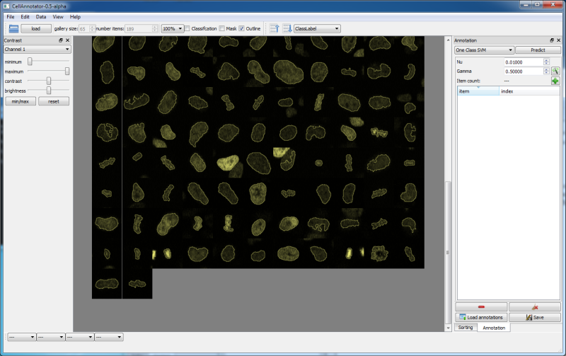

CellAnnotator
CellAnnotator is an interactive tool for supervised
classifier training.
It's operating on image galleries or thumbnails rather than raw
microscope images i.e. it is working on preprocessed image data.
The term preprocessed
means that raw images are segmented and for each foreground object i.e.
cell the feature vector, thumbnail, bounding box and outline
is calculated. A cell is represented by its
numerical data, the thumbnail is only the visualization in the
graphical user interface (GUI).

Application
features
Interactivity
The strength of CellAnnotator is its interactivity.
The
immediate feedback reduces the time of classifier training and validation to a
few minutes. Validation is performed using cross validation. The interactive feedback enables even
unexperienced users to evaluate the classifier visually without interpreting the numbers.
Gallery viewer
The main widget is the gallery viewer which is the central
widget of the GUI. It is possible to adjust the gallery view
by toggling the
outlines and background masks and turning on/off indicator squares
for predictions results. Standard functionality such as zooming an
contrast enhancement is of course also provided.
Multiple color support
CellAnnotator is always working
on multiple color channels. If the raw images are red and green,
the viewer also shows red and green. If the raw images were only gray,
the
viewer shows only gray. Multicolor support particularly means
that the feature vectors
of the single color channels are always concatenated to a combined
feature
vector and a classifier is always working on the concatenated feature
vector. The feature set is the same as in the Cellcognition project
and is documented here.
Sorting and ranking:
To train a classifier, it is necessary to annotate a
sufficient number of training examples i.e. cells that
represent a certain cell morphology. The search for
a proper training set within the raw images is tedious and time consuming.
CellAnnotator addresses this problem by sorting and ranking the image
gallery by similarity measures of the feature vectors. If one example
of a cell morphology is found, the gallery can be sorted, and similar
objects are presented beside each other to the user.
Classifier training:
Training of a Support
Vector Machine consists of three parts. First find
the proper
class definition, second annotate the training samples and last but not
least validate the classifier. Validation is achieved by cross
validation and grid
search, standard methods for support vector classifiers.
Defining the classes and annotation is usually an iterative
procedure. This is the big advantage of CellAnnotator, the user starts for
example with inter phase + mitotic and annotates examples. After grid
search the predicted classes are indicated for each cell object and it
is possible to correct for classification and
annotation errors or add/remove classes to the
definition.
Data import:
CellAnnotator can handle Zeiss lsm and tiff images.
Preprocessing the raw image is a standard
pipeline i.e. segmentation for foreground background separation,
calculation of outlines (contours), bounding boxes, thumbnails and last
but not least the feature vectors. The data is saved in hdf5
format, optimized for fast reading, but CellAnnotator can also read data
from cellh5.